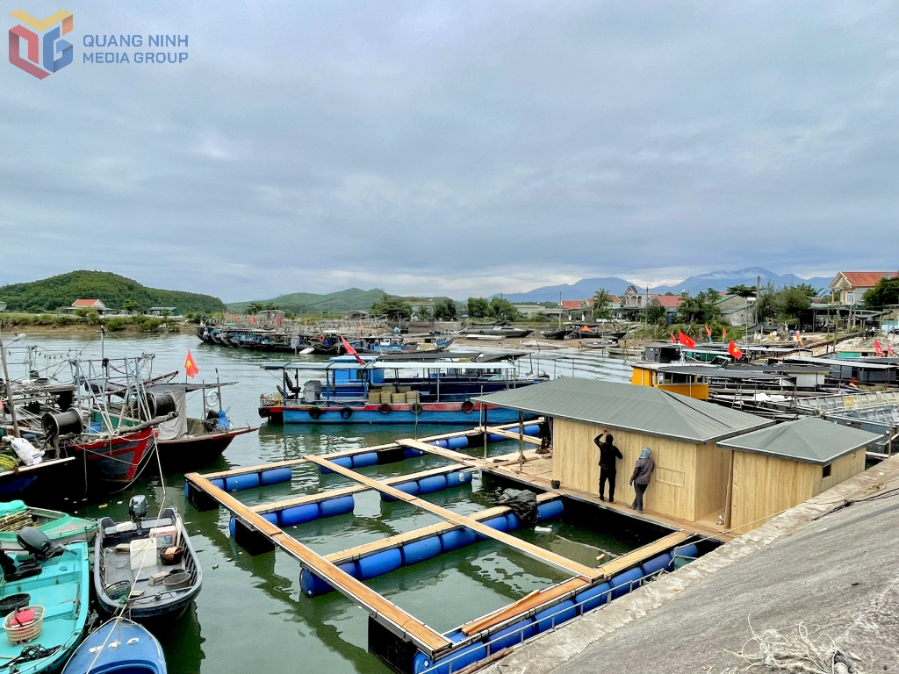
Khám Phá Du Lịch
Hành trình trải nghiệm thiên nhiên hoang sơ và tìm về những chứng tích lịch sử hào hùng.
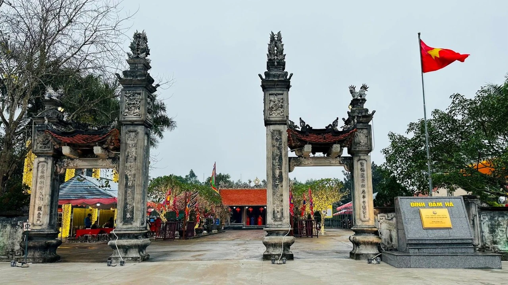
Đình Đầm Hà
Xây dựng từ cuối thế kỷ 17, mang kiến trúc gỗ truyền thống Bắc Bộ. Nơi thờ Thành hoàng làng, trung tâm sinh hoạt văn hóa tâm linh lớn nhất của cộng đồng cư dân ven biển.
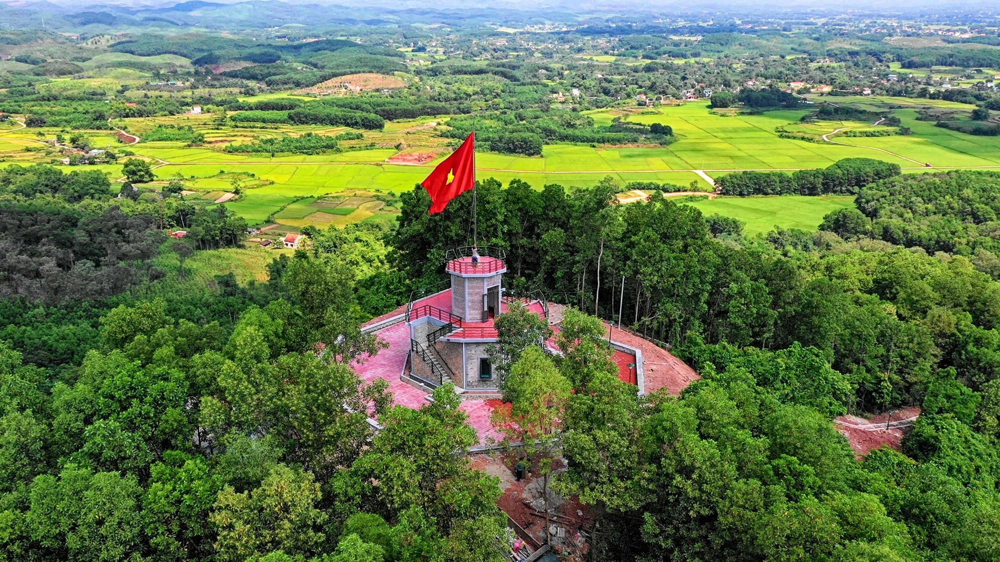
Cột Cờ & Rừng Cò
Căn cứ địa cách mạng kiên cường xưa kia. Nay trên đỉnh núi là Cột cờ Tổ quốc, dưới chân là khu Rừng cò sinh thái bảo tồn hàng vạn cá thể chim quy tụ.
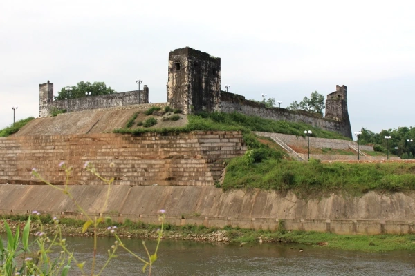
Đồn Đen - Đầm Hà Động
Di tích lịch sử oai hùng. Các lô cốt, hầm hào tại đây là minh chứng sống động cho tinh thần chiến đấu quả cảm, bảo vệ vững chắc biên cương của quân và dân ta.
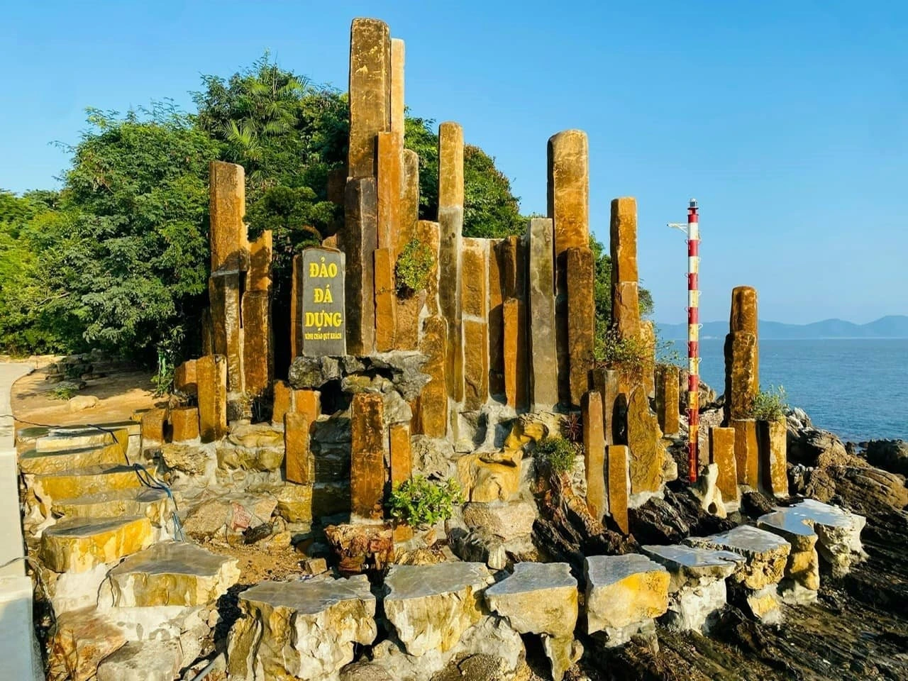
Đảo Đá Dựng
Tuyệt tác thiên nhiên giữa vịnh biển hoang sơ, nổi bật với những khối đá xếp chồng kỳ vĩ. Nước biển trong xanh, là điểm lý tưởng để cắm trại và khám phá.
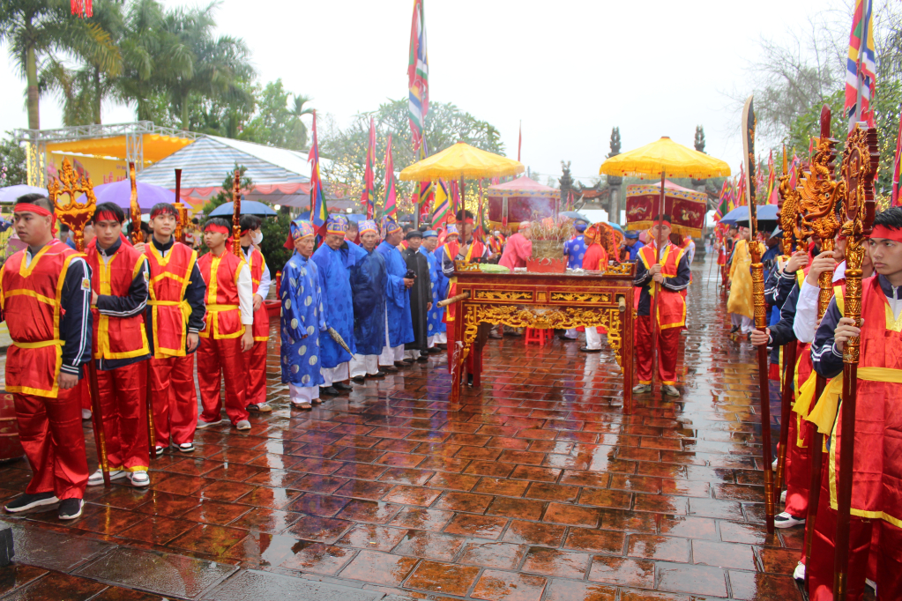
ĐẶC SẢN NỔI TIẾNG ĐẦM HÀ
Tinh hoa ẩm thực chắt lọc từ thiên nhiên miền biển và bàn tay khéo léo của người dân, được lớp 10A7 mang trọn vẹn đến gian hàng!
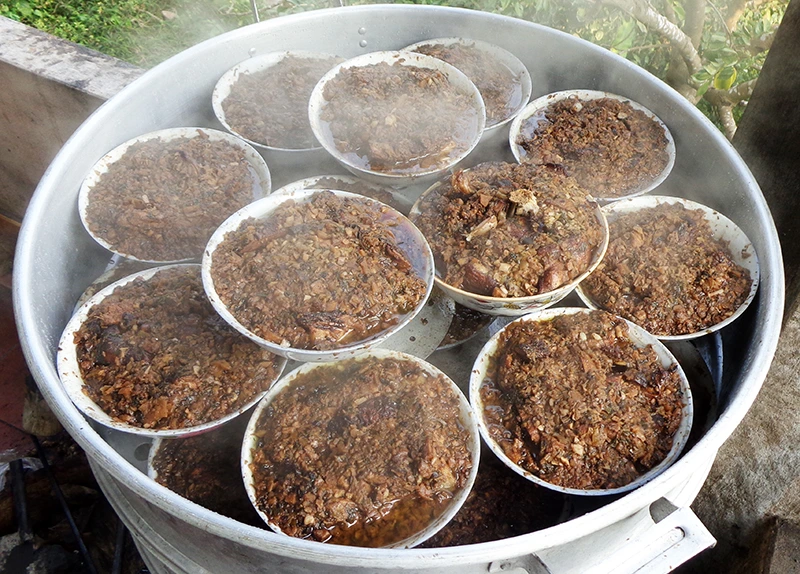
Khâu Nhục
Thịt ba chỉ hấp rục cách thủy 5-6 tiếng cùng tàu xì, khoai môn và ngũ vị hương. Da phồng rộp, mềm rục tan trong miệng béo ngậy mà không ngấy.
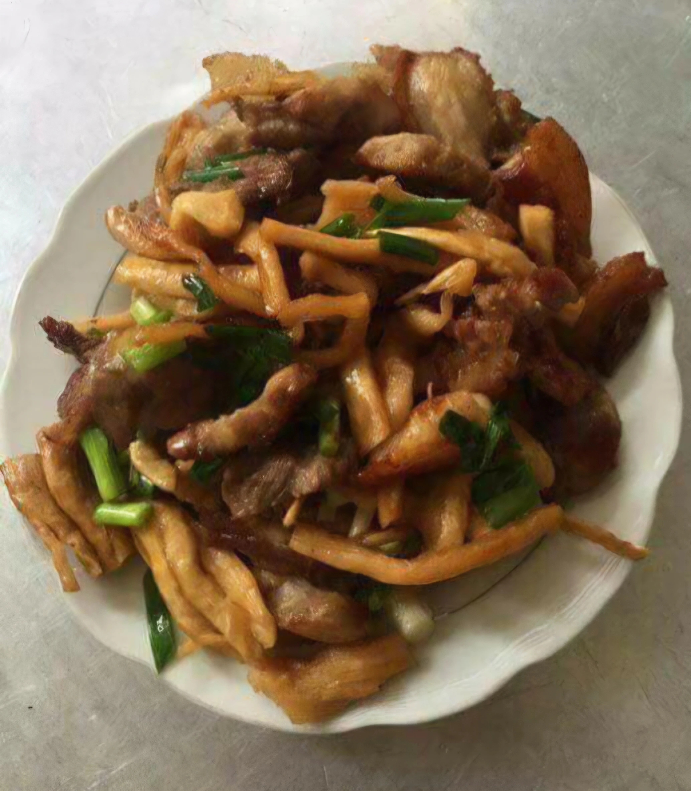
Củ Cải Phên
Sản phẩm OCOP 3 sao. Củ cải tươi thái lát phơi nắng trên phên tre. Vị mặn mòi quyện ngọt hậu tự nhiên, giòn sần sật cực kỳ đưa cơm.
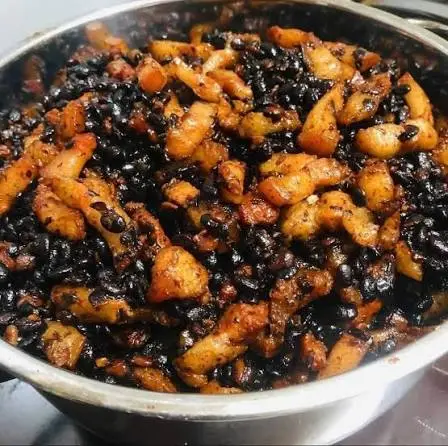
Tàu Xì
Làm từ đậu đen lên men ủ muối phơi nắng, có màu đen nhánh. Vị mặn bùi, dùng để chưng cá hay kho thịt đều nâng tầm món ăn xuất sắc.
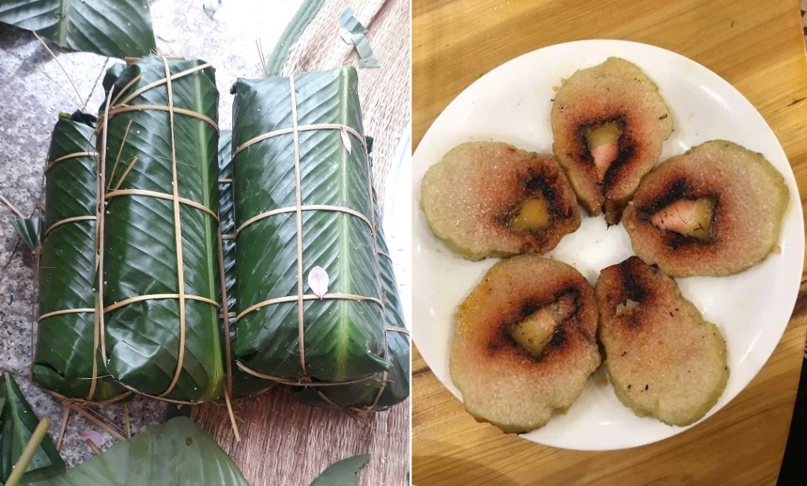
Bánh Chưng Cơm Lông
Nhân bánh màu đỏ tía rực rỡ từ lá cơm lông thanh mát. Sự sáng tạo độc đáo mang đến vị dẻo rền, bùi béo vô cùng lạ miệng.

Bánh Chưng Lát
Những lát bánh chưng dẻo rền được trình bày đẹp mắt. Vị bùi béo dẻo mịn của gạo nếp bản địa và nhân thịt đậu xanh hòa quyện hoàn hảo.

Củ Cải Khô
Củ cải non thái sợi dài phơi khô kiệt. Ngâm nở hầm cùng sườn non sụn lợn tạo ra nồi canh ngọt thanh, trong veo, giải nhiệt cực tốt.
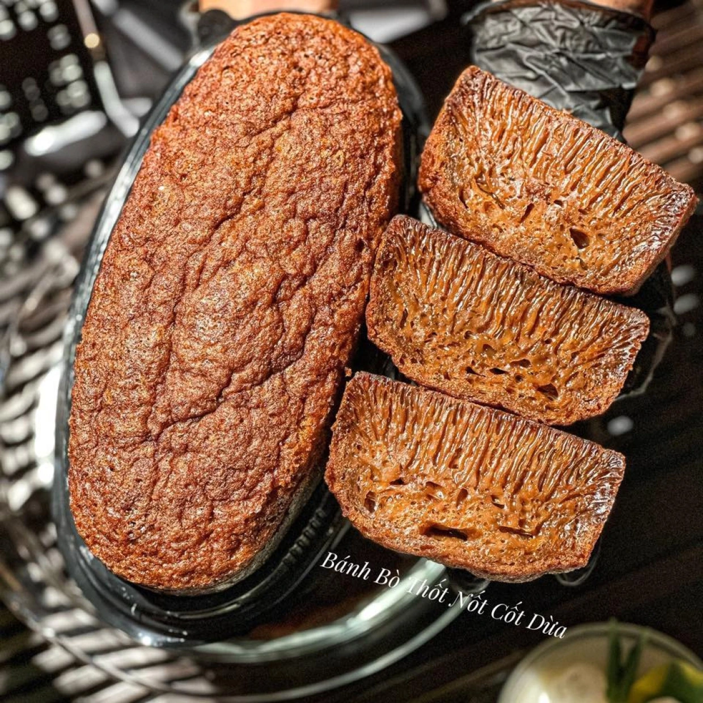
Bánh Bò
Bánh hấp nở xốp rễ tre li ti, vị dai dai xốp xốp ngọt thanh mát. Món quà vặt dân dã gắn liền với bầu trời tuổi thơ tại các phiên chợ.
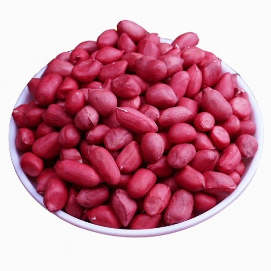
Lạc Đỏ
Giống lạc quý bản địa hạt nhỏ, vỏ lụa màu đỏ tươi. Lạc đỏ chứa nhiều tinh dầu, khi rang nứt vỏ tỏa mùi thơm lừng, giòn rụm và bùi béo.